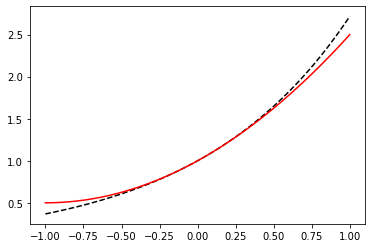

Solutions to assignment tasks
Solutions to assignment tasks¶
import numpy as np
import matplotlib.pyplot as plt
from scipy import linalg, interpolate, special
Assignment task 01:
def sum_of_series(n):
s = np.zeros(n)
for i in range(1, n + 1):
s[i-1] = 2.0 * np.sqrt(i) * np.sin(i * np.pi / 10.0)
return np.sum(s)
print(sum_of_series(100))
n = 100
x = np.linspace(1, 100, 100)
s = np.zeros(n)
for i in range(1, n + 1):
s[i-1] = sum_of_series(i)
fig, ax = plt.subplots()
ax.plot(x, s)
plt.show()
-56.05201335500862
Assignment task 02:
def maclaurin_series(n):
"""
Calculates the Maclaurin series of sin(x) using n terms.
Args:
n (int): Number of terms of the Maclaurin series
Returns:
numpy.ploy1d: Maclaurin polynomial
"""
coeff = np.zeros(2 * n + 2)
for i in range(0, 2 * n + 1, 2):
coeff[i + 1] = (-1.0)**(i / 2) / np.math.factorial(i + 1)
return np.poly1d(coeff[::-1])
def relative_error(x, n):
"""
Calculates the relative error of the Maclaurin series.
Args:
x (float): Coordinate x
n (int): Number of terms of the Maclaurin series
Returns:
float: Relative error
"""
return np.abs(maclaurin_series(n)(x) - np.sin(x)) / np.abs(np.sin(x))
print(format(relative_error(np.pi / 2.0, 2), ".16f"))
n = 0
while True:
if(relative_error(np.pi / 2.0, n) < 200.0 * np.finfo(np.float64).eps):
break
n = n + 1
print(n)
0.0045248555348174
8
Assignment task 03:
def gauss_jordan_elimination(A):
"""
Calculates the inverse matrix using Gauss-Jordan elimination algorithm.
Args:
A (array_like): A n-by-n invertible matrix
Returns:
numpy.ndarray: Inverse matrix
"""
n, n = A.shape
U = np.zeros((n, 2 * n))
U[:, :n] = A
U[:, n:] = np.eye(n)
for i in range(0, n):
max_row = np.argmax(np.abs(U[i:, i]))
if max_row != 0:
row_i = np.copy(U[i, :])
U[i, :] = U[i + max_row, :]
U[i + max_row, :] = row_i
for j in range(i + 1, n):
U[j, :] = U[j, :] - (U[j, i] / U[i, i]) * U[i, :]
U[i, :] /= U[i, i]
for j in reversed(range(0, n - 1)):
for i in reversed(range(j + 1, n)):
U[j, :] = U[j, :] - U[j, i] * U[i, :]
return U[:, n:]
A = np.array([[3, 0, 2], [2, 0, -2], [0, 1, 1]])
print(gauss_jordan_elimination(A))
try:
np.testing.assert_array_almost_equal(gauss_jordan_elimination(A), linalg.inv(A), decimal=7)
except AssertionError as E:
print(E)
else:
print("The implementation is correct.")
[[ 0.2 0.2 0. ]
[-0.2 0.3 1. ]
[ 0.2 -0.3 -0. ]]
The implementation is correct.
Assignment task 04:
def conjugate_gradient_method(A, b, error_tolerance):
"""
Solves system of linear equations using conjugate gradient method.
Args:
A (array_like): A n-by-n real, symmetric, and positive-definite matrix
b (array_like): RHS vector of size n
error_tolerance (float): Error tolerance
Returns:
list: List of all iterations
"""
n, n = A.shape
x = np.zeros(n)
r = b - A @ x
p = r
list_of_iterations = [x]
while True:
alpha = (r.T @ r) / (p.T @ A @ p)
x = x + alpha * p
list_of_iterations.append(x)
r_new = r - alpha * A @ p
if linalg.norm(r_new) < error_tolerance:
break
beta = (r_new.T @ r_new) / (r.T @ r)
p = r_new + beta * p
r = r_new
return list_of_iterations
A = np.array([[4, 1], [1, 3]])
b = np.array([1, 2])
solution = conjugate_gradient_method(A, b, 1.0e-15)
for s in solution:
print(s)
n = 100
x_1 = np.linspace(-1.0, 1.0, n)
x_2 = np.linspace(-1.0, 1.0, n)
X_1, X_2 = np.meshgrid(x_1, x_2)
f = np.zeros((n, n))
for i in range(n):
for j in range(n):
x = np.array([X_1[i, j], X_2[i, j]])
f[i, j] = 0.5 * x.T @ A @ x - x.T @ b
fig, ax = plt.subplots()
ax.contour(x_1, x_2, f, colors="black", zorder=1)
for s in solution:
ax.scatter(s[0], s[1], color="red", zorder=2)
plt.show()
[0. 0.]
[0.25 0.5 ]
[0.09090909 0.63636364]
Assignment task 05:
def function(x):
y = np.zeros(x.size)
y[x <= 5.0] = -1.0
y[x > 5.0] = 1.0
return y
a = 0
b = 10
x_p = (a + b) / 2.0 + (b - a) / 2.0 * special.roots_chebyt(10)[0]
y_p = function(x_p)
f = interpolate.lagrange(x_p, y_p)
print(f)
x = np.linspace(a, b, 1000)
fig, ax = plt.subplots(1, 2, figsize=(10, 3))
ax[0].scatter(x_p, y_p, color="red")
ax[0].plot(x, f(x), color="red")
ax[0].plot(x, function(x), color="black")
ax[1].plot(x, np.abs(f(x) - function(x)), color="blue")
fig.tight_layout()
plt.show()
9 8 7 6 5 4
2.654e-05 x - 0.001194 x + 0.02221 x - 0.22 x + 1.247 x - 4.052 x
3 2
+ 7.172 x - 6.148 x + 1.958 x - 1.099
Assignment task 06:
def cubic_spline(x_p, y_p):
"""
Calculates cubic spline interpolation of a given set of data points.
Args:
x_p (array_like): X-coordinates of a set of data points
y_p (array_like): Y-coordinates of a set of data points
Returns:
List[numpy.poly1d]: List of natural cubic splines
"""
n = x_p.size
cubic_splines = []
p = np.zeros(n - 3)
q = np.zeros(n - 2)
r = np.zeros(n - 3)
b = np.zeros(n - 2)
for i in range(n - 3):
p[i] = (x_p[i + 2] - x_p[i + 1]) / 6.0
r[i] = (x_p[i + 2] - x_p[i + 1]) / 6.0
for i in range(n - 2):
q[i] = (x_p[i + 2] - x_p[i]) / 3.0
b[i] = (y_p[i + 2] - y_p[i + 1]) / (x_p[i + 2] - x_p[i + 1]) - (y_p[i + 1] - y_p[i]) / (x_p[i + 1] - x_p[i])
d2y = np.linalg.solve(np.diag(p, 1) + np.diag(q, 0) + np.diag(r, -1), b)
d2y = np.insert(d2y, 0, 0.0)
d2y = np.insert(d2y, n - 1, 0.0)
for i in range(n - 1):
A = np.poly1d([-1.0, x_p[i + 1]]) / (x_p[i + 1] - x_p[i])
B = 1.0 - A
C = (A**3 - A) / 6.0 * (x_p[i + 1] - x_p[i])**2
D = (B**3 - B) / 6.0 * (x_p[i + 1] - x_p[i])**2
cubic_splines.append(A * y_p[i] + B * y_p[i + 1] + C * d2y[i] + D * d2y[i + 1])
return cubic_splines
x_p = np.array([0.0, 1.0, 2.0, 3.0])
y_p = np.array([0.0, 2.0, -1.0, 1.0])
f = cubic_spline(x_p, y_p)
fig, ax = plt.subplots()
ax.scatter(x_p, y_p, color="black")
for i in range(len(f)):
x = np.linspace(x_p[i], x_p[i + 1], 100)
ax.plot(x, f[i](x), color="red")
plt.show()

Assignment task 07:
def newton_raphson(f, x_0, error_tolerance=1.0e-15, max_iterations=500):
"""
Finds the solution of a sytem of equations using Newton-Raphson method.
Args:
f (list): List of functions whose derivatives are continuous and nonzero in the neighborhood of a root
x_0 (numpy.ndarray): Vector of initial values
error_tolerance (float): Error tolerance
max_iterations (int): Maximum number of iterations
Returns:
numpy.ndarray: The vector of solution of a given sytem of equations
Raises:
RuntimeError: Raises an exception when no solution is found within specified error tolerance and maximum number of iterations
"""
def df(f, x, j, h=1.0e-7):
return (f(x + h * np.identity(x.size)[j]) - f(x)) / h
n = x_0.size
J = np.zeros((n, n))
b = np.zeros(n)
k = 0
while k < max_iterations:
for i in range(n):
b[i] = -f[i](x_0)
for j in range(n):
J[i, j] = df(f[i], x_0, j)
delta = linalg.solve(J, b)
x = x_0 + delta
if np.max(np.abs([f[i](x) for i in range(n)])) < error_tolerance:
print("root found within tolerance", error_tolerance, "using", n, "iterations")
return x
x_0 = x
k = k + 1
raise RuntimeError("no root found within tolerance", error_tolerance, "using", max_iterations, "iterations")
def f(x):
return x[0]**2 + x[1]**2 - 2.0 * x[2]
def g(x):
return x[0]**2 + x[2]**2 - 0.5
def h(x):
return x[0]**2 + x[1]**2 + x[2]**2 - 1.0
system = [f, g, h]
x_0 = np.array([1.0, 1.0, 0.0])
root = newton_raphson(system, x_0, 1.0e-7, 10)
print(root)
root found within tolerance 1e-07 using 3 iterations
[0.57308562 0.70710678 0.41421356]
Assignment task 08:
import numpy as np
import matplotlib.pyplot as plt
from scipy import linalg
def steepest_descent_nd(f, x_0, step, error_tolerance=1.0e-15, max_iterations=1e5):
"""
Finds the minimum of function using the method of steepest descent.
Args:
f (function): A strictly unimodal and differentiable function in a neighborhood of a point x_0
x_0 (float): Initial guess
step (float): Step size multiplier
error_tolerance (float): Error tolerance
n_max (int): Maximum number of iterations
Returns:
float: A coordinate of minimum
Raises:
RuntimeError: Raises an exception when the minimum is not found
"""
def grad(f, x, h=1.0e-8):
return np.array([(f(x + h * np.identity(x.size)[j]) - f(x)) / h for j in range(x.size)])
k = 0
while k < max_iterations:
x_1 = x_0 - step * grad(f, x_0)
k = k + 1
if linalg.norm(x_1 - x_0) < error_tolerance:
#print("minimum found within tolerance", error_tolerance, "using", k, "iterations")
return x_1
x_0 = x_1
raise RuntimeError("minimum not found within tolerance", error_tolerance, "using", max_iterations, "iterations")
def f(x):
return np.sin(x[1]) * np.exp((1.0 - np.cos(x[0]))**2) + np.cos(x[0]) * np.exp((1.0 - np.sin(x[1]))**2) + (x[0] - x[1])**2
x_min = steepest_descent_nd(f, np.array([-2, -2]), 1.0e-3, 1.0e-7)
print(x_min, f(x_min))
x = np.meshgrid(np.linspace(-3.0 * np.pi / 2.0, -np.pi / 2.0, 100), np.linspace(-np.pi, 0.0, 100))
fig, ax = plt.subplots()
ax.contour(x[0], x[1], f(x), colors="black", linestyles="-")
ax.scatter(x_min[0], x_min[1], color="red", marker="+", s=400)
plt.show()
[-3.13024659 -1.5821422 ] -106.76453674925818
Assignment task 09:
def midpoint_rule(f, a, b, N=100):
"""
Calculates definite integral of 1D function using rectangular rule.
Args:
f (function): A function defined on interval [a, b]
a (float): Left-hand side point of the interval
b (float): Right-hand side point of the interval
N (int): Number of subdivisions of the interval [a, b]
Returns:
float: Definite integral
"""
x, h = np.linspace(a, b, N, retstep=True)
I = 0.0
for i in range(N - 1):
I += h * f((x[i] + x[i+1]) / 2.0)
return I
def f(x):
return x**4 * (1.0 - x)**4 / (1.0 + x**2)
a = 0.0
b = 1.0
N = 10
I = midpoint_rule(f, a, b, N)
error = np.abs((22.0 / 7.0 - np.pi) - I)
print(I, error)
0.0012644494821294993 3.978522017844717e-08
Assignment task 10:
import numpy as np
import matplotlib.pyplot as plt
def forward_euler(f, x_0, x_n, y_0, h):
x = np.arange(x_0, x_n + h, h)
n = np.size(x)
y = np.zeros(n)
y[0] = y_0
for i in range(n-1):
y[i+1] = y[i] + h * f(x[i], y[i])
return x, y
def f(t, N):
return (1.0 + np.cos(t)) * N
t_start = 0.0
t_end = 5.0
N_0 = 1.0
h = 0.2
t, N = forward_euler(f, t_start, t_end, N_0, h)
print(N[-1])
t_exact = np.linspace(t_start, t_end, 1000)
N_exact = N_0 * np.exp(t_exact + np.sin(t_exact))
fig, ax = plt.subplots()
ax.plot(t_exact, N_exact, color="black")
ax.scatter(t, N, color="red")
plt.show()
38.25827715526892
Assignment task 11:
import numpy as np
from scipy import optimize
import matplotlib.pyplot as plt
def shooting_method(f, g, a, b, n, alpha, beta):
"""
Solves 2nd order explicit ODE in the form y(x)'' = f(x, y(x), y(x)') in [a, b] with y(a) = alpha, y(b) = beta
using shooting method.
Args:
f (function): function
g (function): function
a (float): The left-most point of the interval
b (float): The right-most point of the interval
n (int): number of points dividing interval [a, b]
alpha (float): initial value at x = a
beta (float): initial value at x = b
Returns:
numpy.ndarray: Vector of grid-points
numpy.ndarray: Vector of solution
"""
def semi_implicit_euler_system(f, g, a, b, n, y_0, z_0):
x, h = np.linspace(a, b, n, retstep=True)
y = np.zeros(n)
z = np.zeros(n)
y[0] = y_0
z[0] = z_0
for i in range(n - 1):
z[i + 1] = z[i] + h * f(x[i], y[i], z[i])
y[i + 1] = optimize.fsolve(lambda q: q - y[i] - h * g(x[i + 1], q, z[i + 1]), y[i])
return x, y
def shooting_function(gamma):
x, y = semi_implicit_euler_system(f, g, a, b, n, alpha, gamma)
return y[-1] - beta
root = optimize.fsolve(shooting_function, 0.0)
x, y = semi_implicit_euler_system(f, g, a, b, n, alpha, root)
return x, y
def f(x, y, z):
return 5.0 / x * z - 8.0 / x**2 * y
def g(x, y, z):
return z
a = 1.0
b = 2.0
n = 10
alpha = 0.0
beta = 24.0
x_numerical, y_numerical = shooting_method(f, g, a, b, n, alpha, beta)
print(y_numerical)
x_analytical = np.linspace(a, b, 100)
y_analytical = 2.0 * (x_analytical**4 - x_analytical**2)
fig, ax = plt.subplots()
ax.scatter(x_numerical, y_numerical, color="red")
ax.plot(x_analytical, y_analytical, color="black")
plt.show()
[ 0. 0.80073862 1.93778745 3.46355849 5.43264755 7.9019118
10.93052913 14.58004453 18.91440711 24. ]